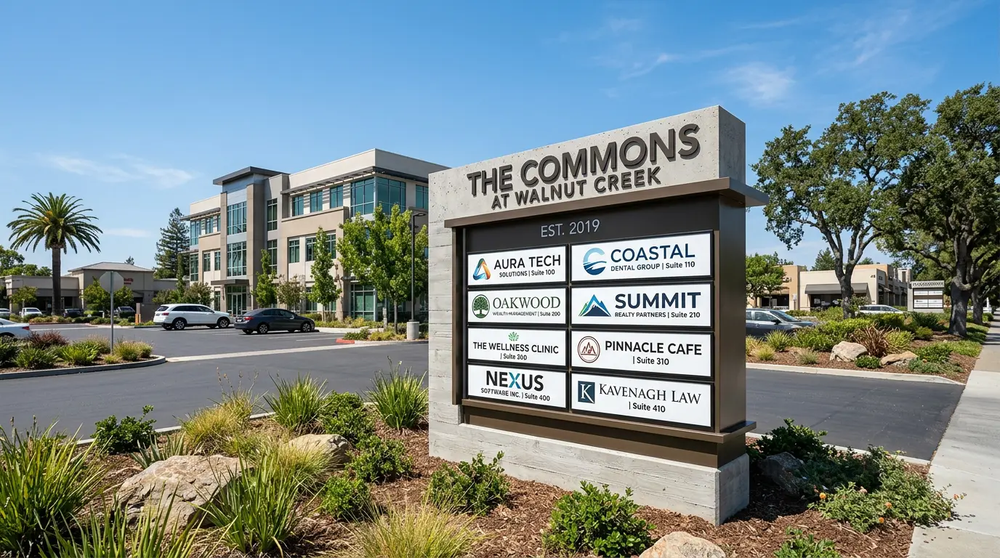
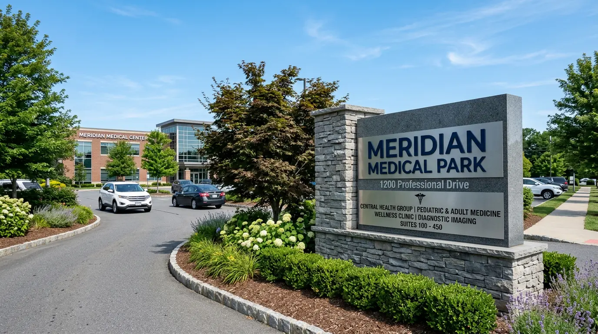
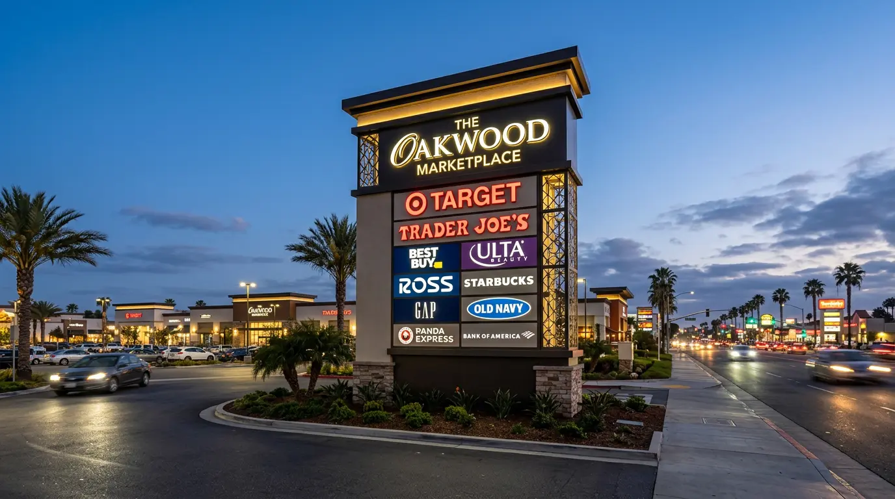
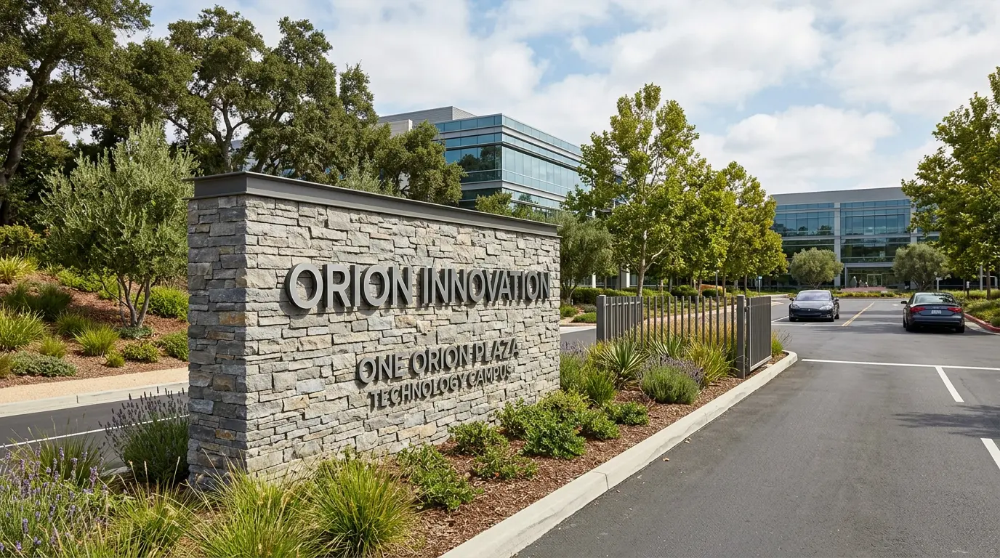
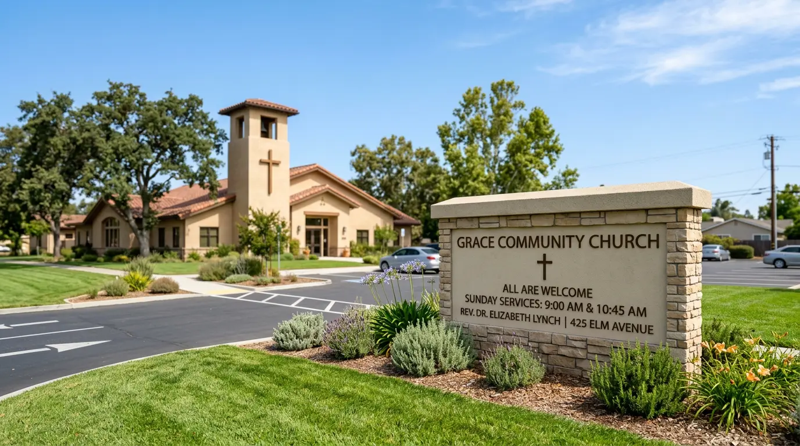

Custom illuminated, multi-tenant, and LED monument signs for office parks, medical campuses, retail centers, and commercial properties across San Jose and Silicon Valley. Design, permits, fabrication, and installation — one team.
Monument signs are ground-mounted exterior signs — freestanding structures positioned at property entrances, parking lot entrances, or roadside locations to identify a business, building, or campus. Unlike pole signs or building-mounted channel letters, monument signs sit at or near grade level, giving them a substantial, permanent presence that communicates stability and scale. They're the first sign a visitor, patient, or tenant sees when approaching a property.
In Silicon Valley, monument signs are most common at office park entrances, medical campus driveways, shopping center perimeters, and multi-tenant commercial properties where multiple businesses share a single address. They range from simple single-panel non-illuminated structures to sophisticated multi-tenant LED-lit directory monuments with changeable tenant panels.
Monument signs in San Jose and surrounding cities require a sign permit — typically from both the City and the property's landlord or HOA. The permitting process involves submitting architectural drawings, structural calculations in some cases, and demonstrating compliance with the applicable sign ordinance for that zoning district. We handle the entire process.
Most monument signs in San Jose require a sign permit through the City's Development Services Department via SJPermits.org. Requirements vary by zoning district — commercial, industrial, and mixed-use zones have different allowable heights, setbacks, and sign area calculations. Monument signs over a certain height or sign area may also require a structural engineering report. We review all of this before quoting so your project doesn't stall mid-process.
Office parks, medical campuses, retail centers, and multi-tenant commercial properties — real installations across the South Bay.

Multi-Tenant · Commercial
Non-Illuminated · Medical Campus
LED Illuminated · Retail
Custom Stone & Metal · Corporate
Non-Illuminated · InstitutionalMonument signs vary widely in structure, material, illumination, and function. Here's what we offer and where each type fits.
Cabinet-style monument signs with internally illuminated LED face panels. The most common type for retail centers, medical offices, and commercial properties that need after-dark visibility. Available as single-tenant or multi-tenant configurations with aluminum cabinet construction.
Most Common · Retail · MedicalMonument signs with interchangeable tenant panels for commercial properties with multiple businesses sharing one address. Tenants change — the monument stays. Panel systems allow individual tenant names to be updated without disturbing the sign structure or requiring a new permit.
Office Parks · Shopping CentersDimensional letter or flat panel monument signs without internal lighting — typically used on corporate campuses, institutional properties, and locations where the sign is well-lit by surrounding area lighting or ambient light. Lower cost, lower power demand, no electrical permit required.
Corporate · Institutional · HOAsMonument signs with programmable LED display panels for businesses that need to update their messaging — hours, specials, events, announcements. Subject to City of San Jose regulations on animation and brightness. We handle the permit process including EMC-specific submittal requirements.
Retail · Churches · SchoolsHigh-end monument signs with natural stone, manufactured stone veneer, or masonry bases combined with dimensional letter faces, illuminated cabinet panels, or LED elements. Common for corporate headquarters, luxury retail, medical campuses, and properties where the monument needs to match the architectural character of the building.
Premium · Corporate · MedicalLarger-format monument structures for campus entrances, hospital driveways, university entry points, and multi-building office parks. These often involve multiple sign locations, coordinated design across the property, and phased installation. We manage the complete sign program from permit to final install.
Campuses · Hospitals · UniversitiesMonument signs are the highest-stakes exterior sign type — high cost, long lead time, permanent installation. Getting the permit, design, and fabrication right the first time matters more here than anywhere else.
Monument sign regulations in San Jose vary significantly by zoning district — Commercial (CN, CG, CC), Industrial, and mixed-use zones all have different height limits, setback requirements, and maximum sign area calculations. We review your zoning before the first design sketch so you don't invest in plans that won't be approved. We submit to SJPermits.org and manage the review process through to approval.
Concept design, permit drawings, landlord approval package, structural calculations coordination, fabrication, electrical rough-in coordination, and installation — managed by one person. Monument sign projects typically involve multiple contractors and approvals. We keep it from becoming your problem to manage.
We fabricate monument sign cabinets and faces in aluminum and steel — not foam or lightweight materials that won't hold up to California wind loads and UV exposure. LED systems are commercial-grade, UL-listed, and warrantied. Structural bases are engineered for California seismic requirements where applicable.
Monument sign projects in San Jose typically take 8–16 weeks from permit submittal to installed sign — depending on City review times, fabrication lead times, and site conditions. We set realistic expectations from the first conversation and communicate proactively when timelines shift. No surprises at the invoice stage.
Two tools that speed up the early planning stage for monument sign projects.
For multi-tenant monuments, figuring out how to list tenants consistently — suite numbers, business names, abbreviations — matters for the permit drawings and fabrication order. Our tool helps you get the copy hierarchy right before design starts.
Try the Sign Copy Tool →Tell us your property address, zoning type, existing sign criteria from your lease or CC&Rs, tenant count, and illumination preference — and we can get you a concept design and preliminary estimate within a few business days.
Start Your Design Brief →Monument signs serve a wide range of commercial property types. Here's who we work with most.
Multi-tenant directory monuments for Silicon Valley office parks — identifying multiple tenants at a shared address with interchangeable panels that update as tenants come and go.
Entry identification signs, building directory monuments, and accessible route markers for medical office buildings, hospital outpatient facilities, and specialty care campuses across the South Bay.
Illuminated perimeter monument signs for strip malls, neighborhood shopping centers, and standalone retail buildings. Anchor tenant and multi-tenant configurations with changeable panels.
Roadside monument signs with high-visibility illumination for standalone restaurant locations. LED message centers for daily specials and hours are common for quick-service concepts.
Entry identification monuments for industrial parks and R&D campuses in North San Jose, Santa Clara, and Sunnyvale. Typically non-illuminated or halo-lit metal letter configurations.
LED electronic message center monuments for congregations and schools that need to update their messaging regularly — service times, events, announcements. We navigate the specific City regulations that apply to religious and educational institutions.
Entry monument signs for residential developments, apartment complexes, and mixed-use communities. Non-illuminated stone veneer monuments are the most common — coordinated with the HOA's architectural review process.
High-visibility illuminated monuments for auto dealerships on San Jose's automotive corridor. Manufacturer brand standards often apply — we work within OEM sign program requirements.
Monument signs are often part of a complete exterior sign package.
Monument sign projects require more steps than most sign types. Here's the complete process — and what we handle at each stage.
We visit your property, review your zoning district, check the applicable sign ordinance for height and area limits, and identify any deed restrictions or HOA/landlord sign criteria that apply. This step prevents surprises at the permit stage.
We produce design renderings for your approval and then prepare permit-ready drawings — elevations, site plan showing setbacks, sign area calculations, and electrical specs if illuminated. Submitted to the City of San Jose via SJPermits.org.
Once the permit is approved, fabrication begins. Cabinet, base, faces, and LED system are built to the approved drawings. Electrical components are UL-listed and inspected before shipment. Typical fabrication lead time is 4–6 weeks.
Foundation poured, cabinet set, electrical connected. Final City inspection scheduled and passed. For illuminated signs, the electrical connection is coordinated with a licensed electrician — we manage that coordination as part of the project.
Based in San Jose, we permit and install monument signs throughout the South Bay Area and Silicon Valley.